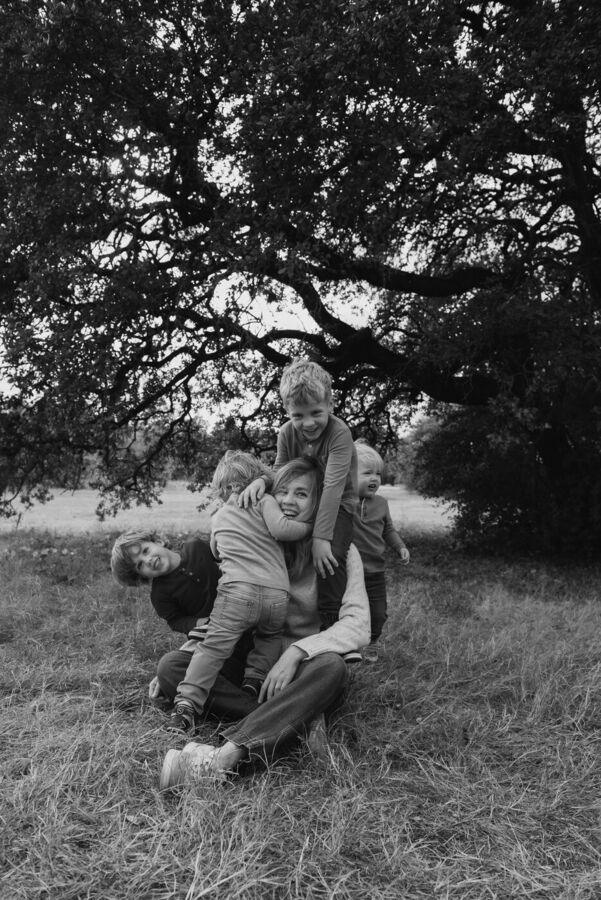

Teaching art in the classroom
Through ArtSmart, a parent volunteer program, I teach art lessons in my children's elementary school classrooms.
For ten years I've been a product manager in SaaS, most recently at Zapier and Mutiny, turning complicated problem spaces into simple experiences for real people. Before that I worked at the LIVESTRONG Foundation, where the donors I supported funded programs for cancer survivors and their families. That human-centered start is what pushed me to learn to code and build things that help people. Now I also design murals for the communities and places they live in, and draw illustrations about motherhood and for my boys.
One unifying thread runs through my career, art and activism: figuring out what people need, where they want to go and building the way there.
Home base is San Antonio, where I live with my husband, our scruffy dog, and our four young sons. I recently took a career break to be home with my boys full time, and they are my favorite (and loudest) collaborators. Now I'm returning to mission-driven work.

I do my best work in tangled problem spaces, turning them into experiences that solve real problems for real humans. I'm comfortable zoomed all the way out on strategy and all the way in on the details. I started out helping cancer survivors at Livestrong, came to product from engineering, and still like working closely with the people who build.
Led generative research that defined a new strategic opportunity and persona for the company, then turned it into the Enterprise product strategy and a roadmap toward a five-year vision.
Built customer data integrations, then grew and led a team of data engineers.
My career began in nonprofit work, alongside a mission of helping cancer survivors navigate the complexities of treatment and survivorship. It gave me a human-centered foundation I still work from, and it pushed me to learn to code so I could build real solutions that helped people.
In my free time, I volunteer teaching art at my children's elementary school, and I design and donate murals to local elementary schools.
Through ArtSmart, a parent volunteer program, I teach art lessons in my children's elementary school classrooms.
I designed and donated a mural series celebrating the school's language, growth, belonging and values, with each design mocked up on its wall. See the murals ↓
I design bold, joyful murals for the places and communities they belong to. My recent work is a series for a local bilingual elementary school: bright, graphic pieces that celebrate language, growth and belonging. I create each design and mock it up on the wall it was made for.
"Let's grow together," in a garden of folk florals.
Papel picado banners carrying the school's values: presente, respetuoso, inclusivo, dedicado, empático.
Shown as designs alongside mockups on the school walls. Select any image to see it larger.
I also draw about motherhood, honestly and with a sense of humor, and make stories and pictures for my boys. More of this work lives on Instagram at @homeiswherethehillsare ↗.
Watch Hello Summer come together, from loose pencil sketch to line work to final color.
"The world was all before them, where to choose / Their place of rest, and providence their guide." (XII.646–47)
Paradise Lost ends with Adam and Eve walking into a world they have no map for. My thesis asks what maps meant to Milton's readers, at a time when new geometric maps based on Ptolemy's Geography were replacing the symbolic medieval mappaemundi.
I argue that Milton plays the two against each other. Satan surveys the world like a cartographer, measuring space and ignoring meaning. Adam is given a cosmographic vision in which place is also temporal and spiritual. Because every map assumes a viewer, the poem keeps returning to how a person and a place shape each other.
Product roles, mural commissions, or just a good conversation about Milton. The best way to reach me is a message on LinkedIn.